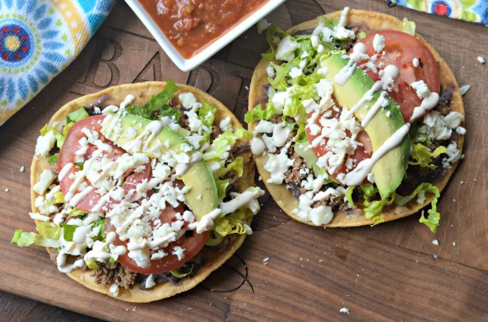

Tostadas

A childhood favorite that is super easy to make!
Tostadas are one of my favorite dishes of all time. They're easy to make and are delicious!
Try them with the Mexican Avocado Salsa
Ingredients
- Pack of Tostadas (I recommend these)
- Refried beans
- Avocado
- Queso Fresco Crumbles
- Shredded Lettuce
- Sliced Tomato
- (Optional) Protein of choice
Instructions
- Slice up the avocado and throw it in the blender along with the peppers,cilantro, and milk
Careful! This next step is super important!
- While on a slower blending speed, slowly pour about a 1/3 cup of water into the blender
- Salt to taste and serve!
Return Home